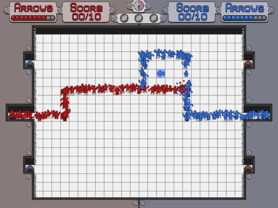

{ Simon Chauvin }
 |
|  |
|  |
|  |
| 
Havre
Cylindrical world | Exploration | Climate simulation

A first person exploration game set inside a dynamic cylindrical world. Explore a different kind of gravity and trigger large scale climatic phenomenons to bring Havre back to life
The Landscape Processor
Ludum Dare 32 | Sandbox | NotGames Fest 2015
Play.
Build a landscape.
Part of the official selection of the 2015 NotGames Fest.
Appeared on Warp Door.
Palimpseste
Alternative Controller | First Person | Exploration

A first person exploration game played with a custom apparatus that enables players to change the color filter through which they look at the screen.
Les Migeons
Sandbox | Global Game Jam 2015 | Genetic Algorithm

Play.
The game uses a genetic algorithm that is supposed to be autonomous and iterate a great number of time to allow for a quick evolution process through reproduction and mutation. Here, we gave the selection process to the player so that she could choose which Migeon should pass its genes on. The genes in Les Migeons are simply build orders.
Made with Guillaume and Stéphanie.
Appeared on Indie Impressions, Warp Door, L'Oujevipo.
The Rose Processor
Multitasking | Ludum Dare 31 | Abstract
Play.
It’s a game where you have to try and reach the final form of the rose, bud after bud and branch after branch.
The Rose Processor involves very quick multitasking and high reaction speed. It even allows certain strategies like grouping the red triangles or coupling each red triangle with an empty one.
Appeared on L'Oujevipo.
Down the Line
Abstract | Ludum Dare 26 | Puzzle
Play.
Down The Line is the game I made for the 26th Ludum Dare on Minimalism. It gathered enough positive votes to be in the top 100 games of the competition!
Boulevard Descat
Arduino | Zoo Machines 2014 | Electronics
Boulevard Descat is hidden somewhere on the street. It's there for people to find. It cannot be moved, it is fixed with cement in a wall somewhere around Tourcoing, near Lille in France.
It allows anyone with a 9 volts battery to record a melody if, and only if, that person is capable of playing the previous recorded melody.
Ne Quittez Pas
Audio | Zoo Machines 2015 | Android


Mapping the Iceberg
Unity | openFrameworks | Processing
Mapping the Iceberg is an art installation designed by Marie Muller during her residency at Locus Sonus. My main role was to assist Marie by building the various elements needed for the installation to work:
- A system for tracking the position of a person moving in a room.
- A program for tracking that person’s head movements.
- A 3D virtual scene with day/night cycle and sound obstacles.
- A virtual character in sync with the data received from the tracking systems.
{FM.js(engine);}
2D Game Engine | JavaScript | HTML5

My own personal JavaScript 2D game engine.
It is based on the HTML5 Canvas API and it runs on any browser supporting Canvas.
It comes with all the basics for game development like state management, animated sprites, camera and input handling, tiled maps, basic physics and collisions management, a particle system and a basic pathfinding component.
Work Me
Sandbox | Natural Language Processing | L-system
Play.
Work Me is a game where the player writes to a plant to make it grow in certain ways. Some words and sentences make the plant grow higher and thiner or simply larger for example. The player has to discover the different ways she can grow the plant and use it to built her own unique plant.
Made with Marie for the Retro (No) Future Games Festival 2013.
Appeared on L'Oujevipo.
Overflowed
Minions | Two Player | Tactical
Play.
It’s a game Guillaume and I have been developing together for a long time. We have ported it on many platforms because we thought it didn’t fit the web paradigm very well since it’s a 2 player game. Anyway, after a few failed attempts on tablets we have decided that it was time to stop and move on.
Made with Guillaume.
NewsLeaks
Journalism | MMOG | RSS

NewsLeaks is a massively multi-player Facebook game on which I worked very hard for a couple of months, sadly we had to stop the development for many good reasons, like internship for instance.
NewsLeaks makes you play a chief editor and manage actual news from actual sources. It was supposed to allow coopetitive multiplayer gameplay through the selection of news by multiple players inside a journal. The news selected were supposed to create new subjective realities just like actual journals create, a news that no one is talking about is as good as inexistent.
Student project made with Romain, Marie, Simon, Mathilde and Sylvain for the Hits Playtime contest 2011.
Stream
Puzzle | ENJMIN | Time manipulation

Stream has been awarded the e-Magiciens/SACD price during the e-Magiciens Festival 2011. You can also find a review of the game and an interview of the team, made by Jordan Rivas.
Student project made at ENJMIN with Rémi Chapelain, Jean-François Ducreux, Kevin Faure, Pierre-Antoine Favre, Colin Galletto and Franck Langlet.
Wave Me
Alternative control | ENJMIN | Soundwave

Wave Me is an action video game allowing you to play as a sound wave across different levels. In order to get through the game you need to use some of the sound wave properties which are rebounds and wavelength. Each bounce allows you to modify your trajectory but reduces the life of the sound wave. The gameplay is optimization-based in the way that the more you play the less you waste life on rebounds. A novice will get an intense action game while the experienced one will enjoy a more peaceful experience.
Student project made at ENJMIN with Alban Chagnoleau, Germain Mazac, Benjamin Michenaud and Simon Rolland.
Game Developer
I create video games as a game designer and programmer, often alone but also with some very talented individuals. I particularly enjoy games with a strong focus on simple mechanics, proceduralism and/or expressiveness.
I’m also part of Le Chant du cygne game collective. We regularly attend festivals and game jams. We are also working on a huge project inspired by Arthur C. Clarke's Rama.
PhD candidate and lecturer
I am a PhD candidate at the Conservatory of Arts and Crafts in Paris. I am mainly concerned with the potential narratives in emergent games that make extensive use of procedurally generated content.
Since 2011 I have taught computer science, videogame development, game design and level design at the University Paris XIII, University Paris Sud, CNAM and ICAN.